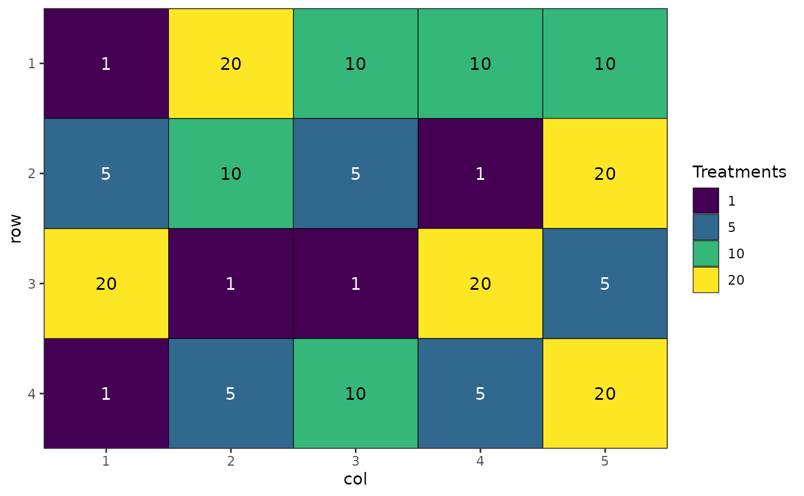
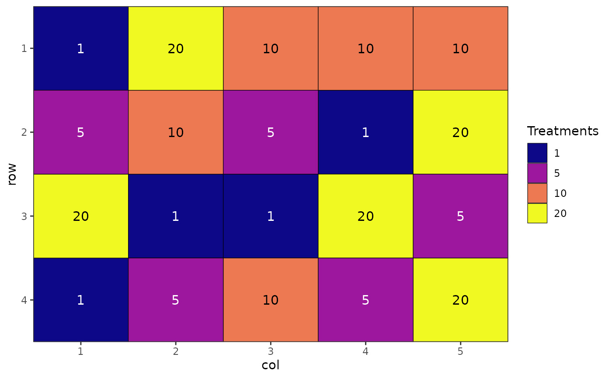
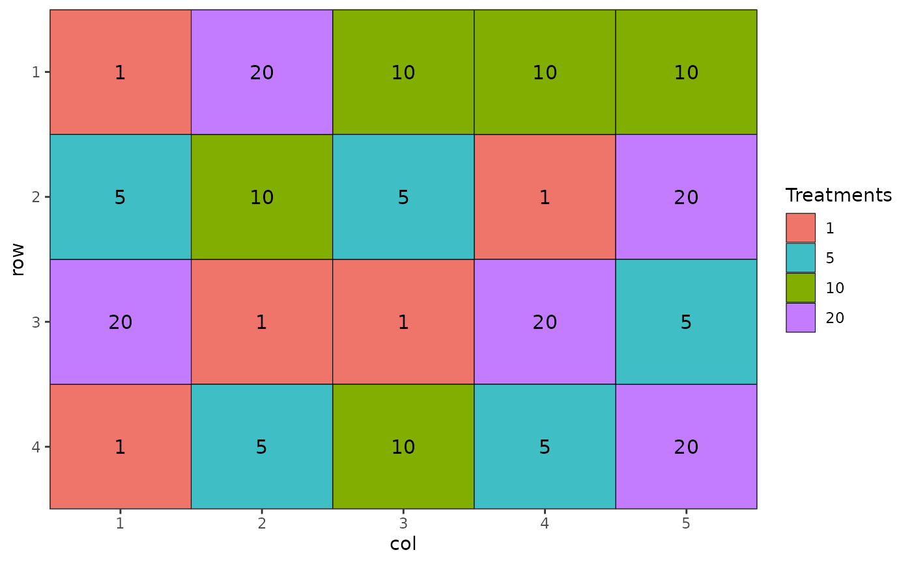
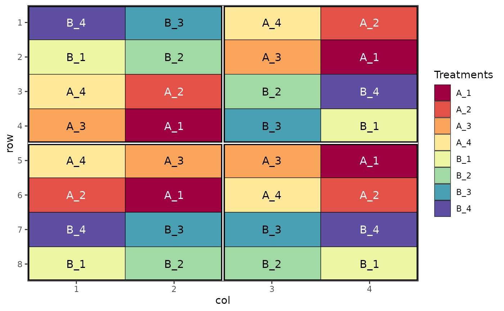
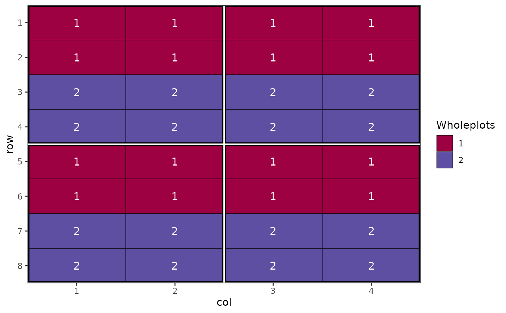
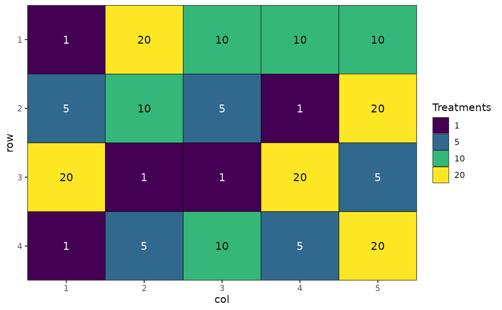
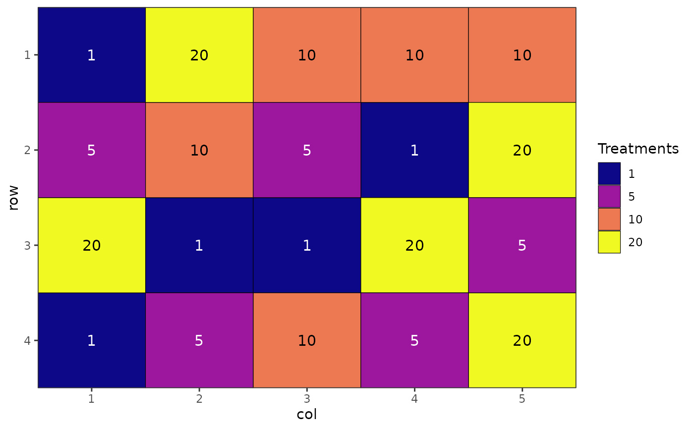
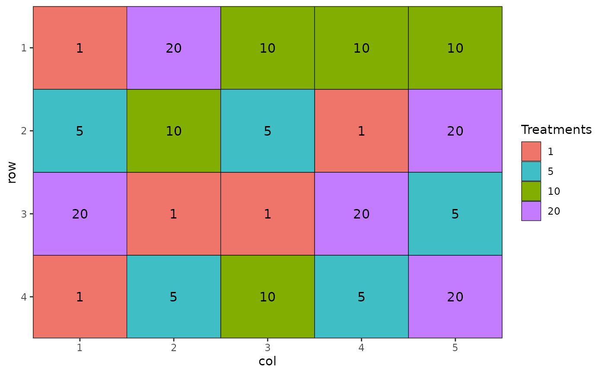
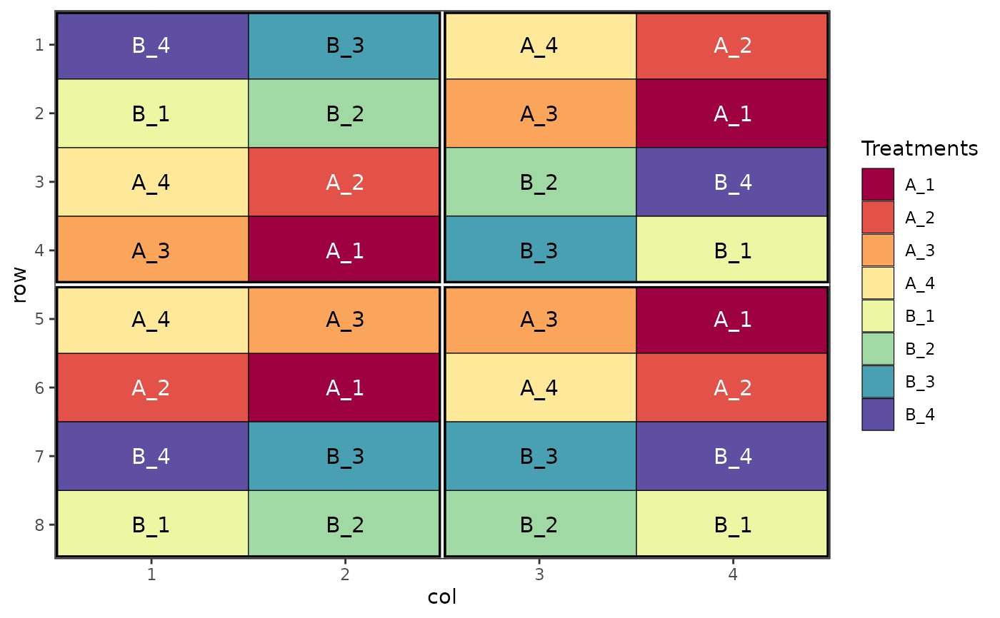
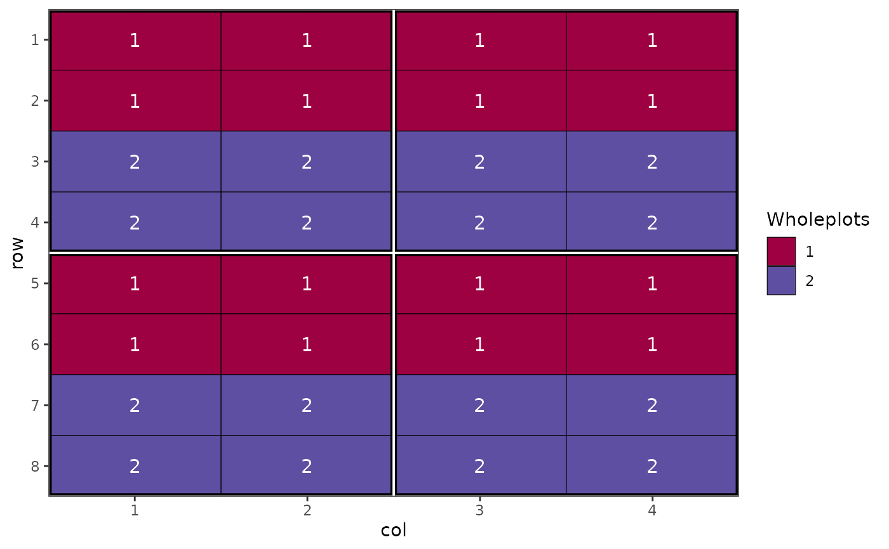

Generate automatic plots for objects generated in biometryassist
Usage
autoplot(object, ...)
# S3 method for class 'mct'
autoplot(
object,
size = 4,
label_height = 0.1,
rotation = 0,
axis_rotation = rotation,
label_rotation = rotation,
type = "point",
...
)
# S3 method for class 'design'
autoplot(
object,
rotation = 0,
size = 4,
margin = FALSE,
palette = "default",
row = NULL,
column = NULL,
block = NULL,
treatments = NULL,
...
)Arguments
- object
An object to create a plot for. Currently objects from the
multiple_comparisons()ordesign()functions with class "mct" or "design" respectively are supported.- ...
Arguments passed to methods.
- size
Increase or decrease the text size within the plot for treatment labels. Numeric with default value of 4.
- label_height
Height of the text labels above the upper error bar on the plot. Default is 0.1 (10%) of the difference between upper and lower error bars above the top error bar. Values > 1 are interpreted as the actual value above the upper error bar.
- rotation
Rotate the x axis labels and the treatment group labels within the plot. Allows for easier reading of long axis or treatment labels. Number between 0 and 360 (inclusive) - default 0
- axis_rotation
Enables rotation of the x axis independently of the group labels within the plot.
- label_rotation
Enables rotation of the treatment group labels independently of the x axis labels within the plot.
- type
A string specifying the type of plot to display. The default of 'point' will display a point estimate with error bars. The alternative, 'column' (or 'col'), will display a column graph with error bars.
- margin
Logical (default
FALSE). A value ofFALSEwill expand the plot to the edges of the plotting area i.e. remove white space between plot and axes.- palette
A string specifying the colour scheme to use for plotting or a vector of custom colours to use as the palette. Default is equivalent to "Spectral". Colour blind friendly palettes can also be provided via options
"colour blind"(or"colour blind", both equivalent to"viridis"),"magma","inferno","plasma","cividis","rocket","mako"or"turbo". Other palettes fromscales::brewer_pal()are also possible.- row
A variable to plot a column from
objectas rows.- column
A variable to plot a column from
objectas columns.- block
A variable to plot a column from
objectas blocks.- treatments
A variable to plot a column from
objectas treatments.
Examples
dat.aov <- aov(Petal.Width ~ Species, data = iris)
output <- multiple_comparisons(dat.aov, classify = "Species")
autoplot(output, label_height = 0.5)
des.out <- design(type = "crd", treatments = c(1, 5, 10, 20),
reps = 5, nrows = 4, ncols = 5, seed = 42, plot = FALSE)
#> Source of Variation df
#> =============================================
#> treatments 3
#> Residual 16
#> =============================================
#> Total 19
autoplot(des.out)
 # Colour blind friendly colours
autoplot(des.out, palette = "colour-blind")

# Alternative colour scheme
autoplot(des.out, palette = "plasma")

# Custom colour palette
autoplot(des.out, palette = c("#ef746a", "#3fbfc5", "#81ae00", "#c37cff"))

# Visualise different components of a split plot design
des.out <- design(type = "split", treatments = c("A", "B"), sub_treatments = 1:4,
reps = 4, nrows = 8, ncols = 4, brows = 4, bcols = 2, seed = 42)
#> Source of Variation df
#> ==================================================
#> Block stratum 3
#> --------------------------------------------------
#> Whole plot stratum
#> treatments 1
#> Whole plot Residual 3
#> ==================================================
#> Subplot stratum
#> sub_treatments 3
#> treatments:sub_treatments 3
#> Subplot Residual 18
#> ==================================================
#> Total 31

# Show the wholeplot components
autoplot(des.out, treatments = wholeplots)

# Display block level
autoplot(des.out, treatments = block)
# Colour blind friendly colours
autoplot(des.out, palette = "colour-blind")

# Alternative colour scheme
autoplot(des.out, palette = "plasma")

# Custom colour palette
autoplot(des.out, palette = c("#ef746a", "#3fbfc5", "#81ae00", "#c37cff"))

# Visualise different components of a split plot design
des.out <- design(type = "split", treatments = c("A", "B"), sub_treatments = 1:4,
reps = 4, nrows = 8, ncols = 4, brows = 4, bcols = 2, seed = 42)
#> Source of Variation df
#> ==================================================
#> Block stratum 3
#> --------------------------------------------------
#> Whole plot stratum
#> treatments 1
#> Whole plot Residual 3
#> ==================================================
#> Subplot stratum
#> sub_treatments 3
#> treatments:sub_treatments 3
#> Subplot Residual 18
#> ==================================================
#> Total 31

# Show the wholeplot components
autoplot(des.out, treatments = wholeplots)

# Display block level
autoplot(des.out, treatments = block)